終於找到你了
今天完全沒有賴床，睜開眼睛的第一件事情就是跟自己說別拖拖拉拉的，網路正在前方等著我。
像這樣在郊區經營的餐廳，為了做半夜路過司機的生意，都營業的很晚，早上我離開的時候每個人都還在睡覺。
輕聲的打開門，在心裡默默的跟他們告別，謝謝你們的晚餐和舒服的沙發床。
早上七點多出發之後，就努力的向前衝，儘管後輪的鋼絲昨夜檢查時發現又斷了兩根。
後輪一共有三十二條鋼絲，目前累積斷了四根，以百分比來計算就是12.5%的損壞率。
斷掉的鋼絲我沒辦法自己修理，只能讓它保持原狀，希望能發現大間的自行車店才有辦法處理，就這麼撐著騎吧。
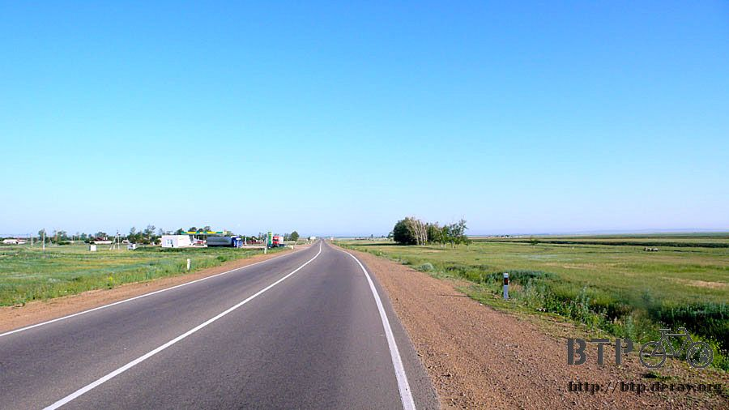
從出發開始就沒停止過腳步，為了早一步抵達首都而努力著。
路旁全都是種植綠色的作物，以超廣大的面積種植著，不知道是機械農業還是純人力辛苦耕種。
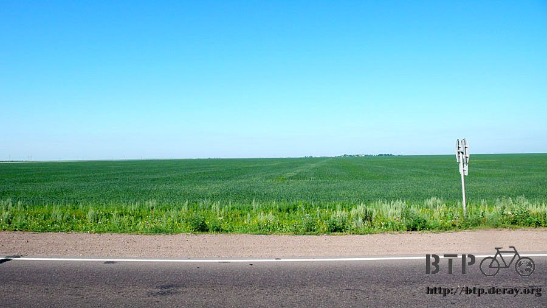
老天爺很喜歡跟我開玩笑，大概是看我急著抵達首都，這一路上居然有三輛各式各樣的小貨車、大卡車，說要載我進首都，這樣比較快。
這真的是惡魔的誘惑，搭他們的車子，不到一個小時就能進城，自己騎車的話，還得要四個多小時，過中午才到的了。
非常掙扎的揮手加搖頭，謝謝他們的好意，趁我還沒反悔之前，趕緊騎著車離開。
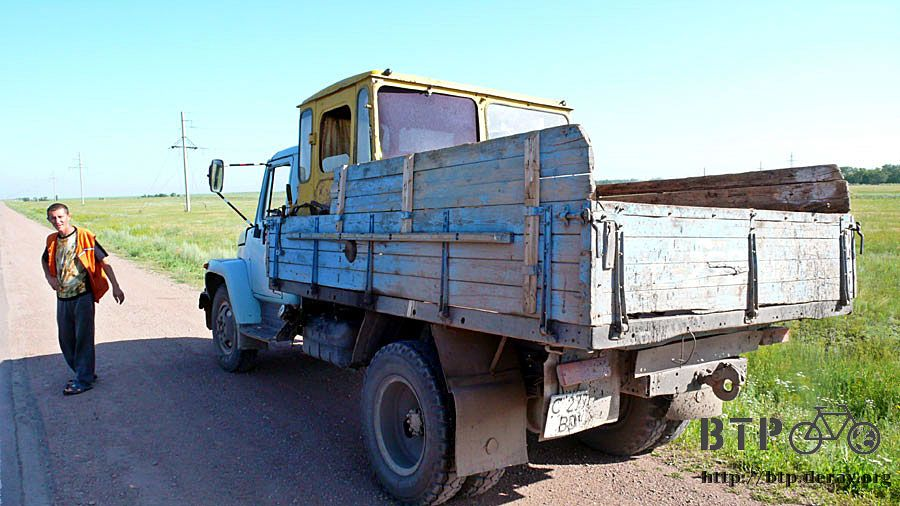
一路沒命的騎，肚子餓就吃巧克力，補充熱量接著騎，中午的時候有點燃燒殆盡的感覺。
在加油站稍做休息，這麼猛的騎車，雙手居然變得無力，連用力握拳都使不上力，想不到我的衝勁只能燃燒到這樣而已。
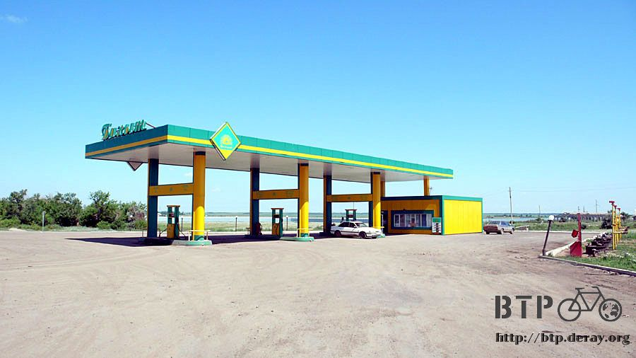
觀察一下小多輪胎的情況，之前騎車旅行出問題的都是爆胎、貨架斷裂這一類的，想不到這一次居然是鋼絲一根接一根的斷掉。
雖然沒有立即性的影響，但是令人很不安心，好像一顆未爆彈正慢慢的在醞釀當中。
雙手恢復知覺之後，剩下不遠的路就不那麼拼命了，輕鬆一點騎。
看到阿斯塔那的牌子時整個人鬆了一口氣，但是周遭一點城市的影子也沒有，看來這個牌子設立在離城市很遠的地方。
而真的從這這個牌子開始騎車，還要再一個小時才會進入市區。
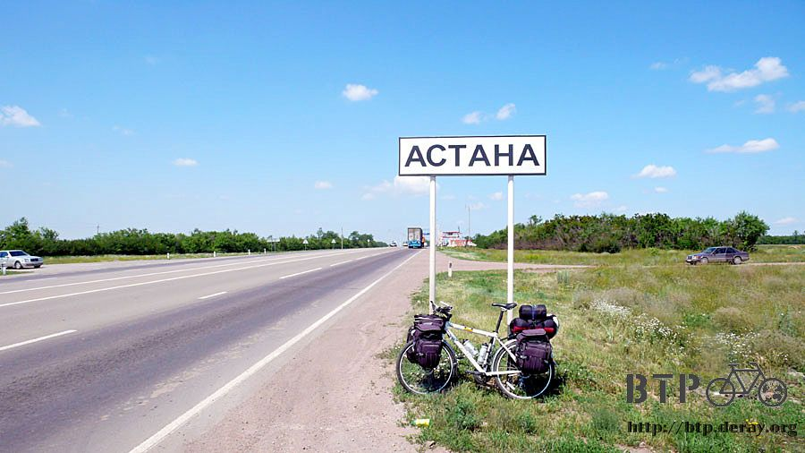
跟之前一樣，進出大城市都會有崗哨檢查站，荷槍實彈的警察會攔車盤檢，乖乖的交出護照吧，可疑台灣人～
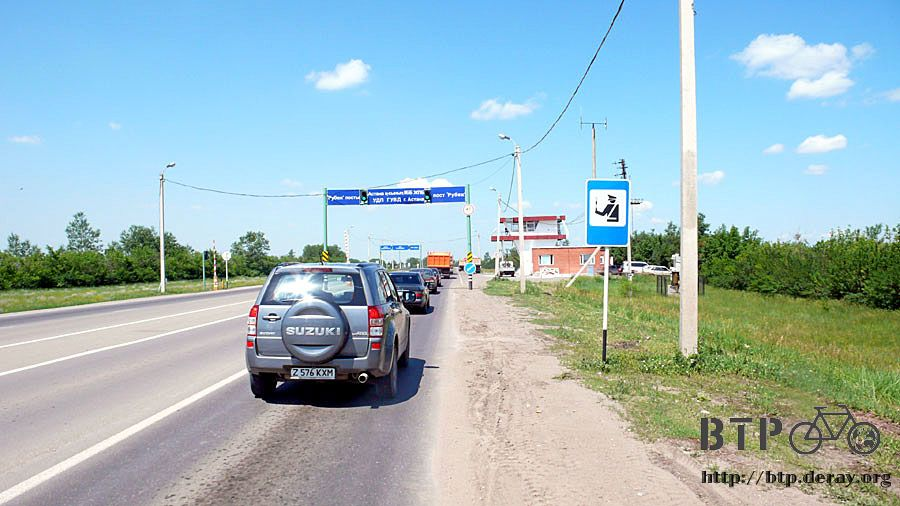
一整路上都是阿斯塔那的招牌拱門，一道接著一道，對於建設這個首都，政府可是相當大手筆。

進入市區之後有點適應不良，待了那麼多天的小村莊、荒原，突然進到大城市，我好像牽著牛要去台北賣的老阿伯。
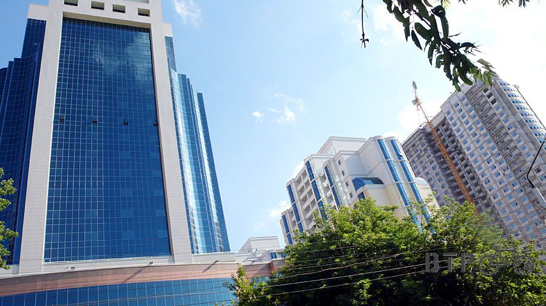
眼光開始搜尋網路的招牌，拿出筆記本重新複習一次哈薩克語的網路怎麼拼，希望今天能順利找到，不然我就要到哈薩克當網吧老闆了。
腦海裡一遍一遍默念著網路的拼法，和每一個映入眼簾的招牌做比對。
找著找著居然被我看到這個牌子：INTERNET
寫的是英文呀～！一個我作夢都朝思暮想的招牌。
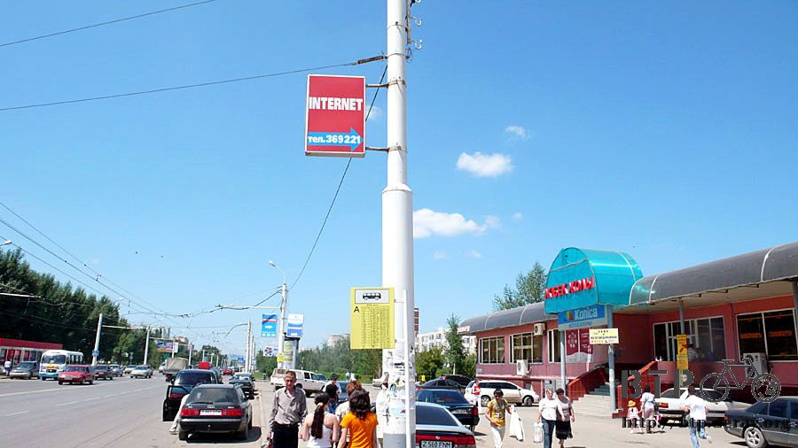
每次找不到網路的時候，我都跟自己說，這有什麼關係，別人是看不到遊記而發愁，而我是看著累積越來越多天的遊記發愁，看開一點啦。
現在不需要看開了，因為網路就在這裡，順著箭頭的方向往裡邊走，哈薩克語版本的網路招牌就出現了。
感動得全身發抖，你可知道我找遍了全哈薩克只為了一睹這個招牌。

將小多牽到裡面，向員工詢問這裡是不是真的可以上網？
好像有點蠢，跟跑到餐廳問人家這裡能不能吃飯一樣意思。
員工點點頭說當然可以，我拿出筆記型電腦，說接自己的電腦也可以嗎？
他們沒辦法幫忙，只能聳聳肩說沒人這樣用過，但我可以試試看。
我拍著胸脯，這次不是說自己是單車旅行者，而是說『電腦工程師』，把電腦接上網小意思。
動工之前先問上網要多少錢？哈薩克網路資源這麼罕見，該不會上網是天價吧。
店員揮揮手跟我說不用～不用～
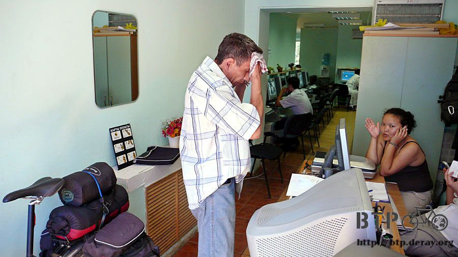
一瞬間我以為是免費上網，但是怎麼可能免費，要是真的不用錢的話，店裡哪有可能空蕩蕩的，早就排隊排到阿拉木圖去了。
大概是上完之後再結帳的意思吧，好不容易才找到網路，價錢已經不太斤斤計較，來研究怎麼接上網路吧。
三分鐘之後，順利重返www的世界了，朝思暮想就為了這一刻呀！
然後在這裡度過了四個小時的時光，騎車的時候四個小時好久，上網的時候一眨眼就過去了。
遊記終於得以上傳，寫了幾封Email，將到哈薩克第一天接濟我的好心家庭照片傳到阿拉木圖，請當地的台灣人幫忙洗出來然後交給那一家人。
更新Google Earth裡俄羅斯的地圖資料，接下來不知道買不買的到俄羅斯的地圖，下次上網可能人已經在莫斯科了。
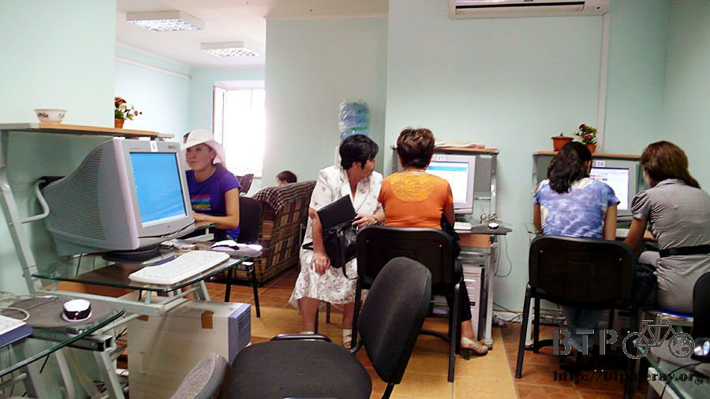
下午五點多，所有的事情都處理完，連台灣的新聞都快速瀏覽過一遍，沒別的事情可以做之後就準備離開。
結帳的時候，小姐在計算機按下一千一百元的數目，真是貴得嚇人，吐了吐舌頭將錢交出來。
用過網路之後心裡終於少了一份未完成的心願，可以含笑的騎車了。
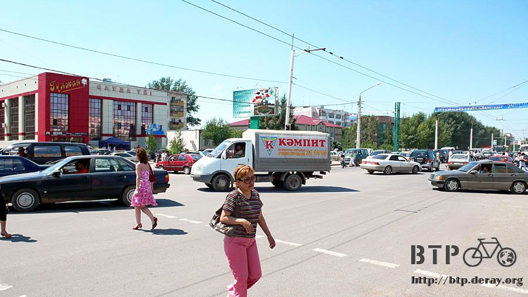
首都不虧是首都，極大！車輛也是極多，在市區騎車比在郊區還危險，好幾次眼看已經快被撞到了，心臟都要跳出來。
哈薩克在1998年將首都遷移至此，過了將近十年，很多東西都還在建設當中，處處都可看到蓋到一半的高樓大廈。
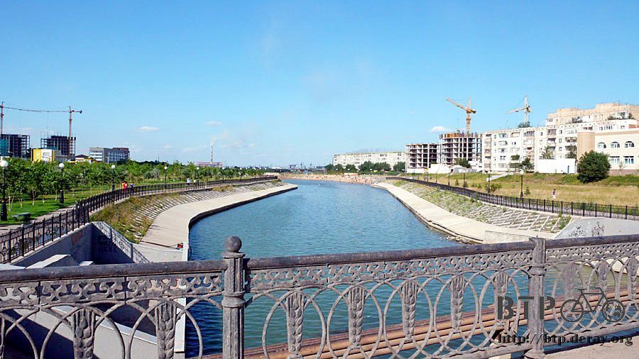
抵達首都之後的選擇有點困難，一個是留在首都住一個晚上，隔天休息，然後看是要城市觀光還是上一整天的網，或是找車店整備小多。
另一個選擇則是離開首都，不做停留接著往下騎，首都的住宿費貴的驚人，住一天我就變窮人了。
在做選擇之前先去商店買東西吃，今天還沒吃到正式的東西呢。
可樂這種東西在哈薩克是時價，沒什麼定價，同樣是一公升裝的寶特瓶，之前在荒郊野外，一路上我都是一瓶兩百元這樣的喝。
現在到了市區價錢瞬間回穩，同樣的可樂一瓶只要一百二十元，就算再買兩根冰淇淋、一條巨無霸麵包，也是兩百元有找的價錢。
啃著超大條的麵包配可樂，肚子餓吃什麼都好，市區旅館的牌子還真不少，但是都太富麗堂皇，不敢進去問價錢嚇自己。
找到一間看起來比較樸素的，進去問了房價，一晚上索費一萬元。
我的老天爺呀！一～萬～元～！
輕哼一聲，讓自己裝出『這個價錢算什麼，我平常都住十萬元一晚上的房間』，不要被看穿自己是鄉巴佬。
跟員工說我考慮一下，窩在旅館外頭的樹下，想偷用旅館的網路，可是沒有訊號，繼續啃著麵包，這時候要做困難的決定了。
住一晚上的超昂貴房間，還是離開阿斯塔那呢？
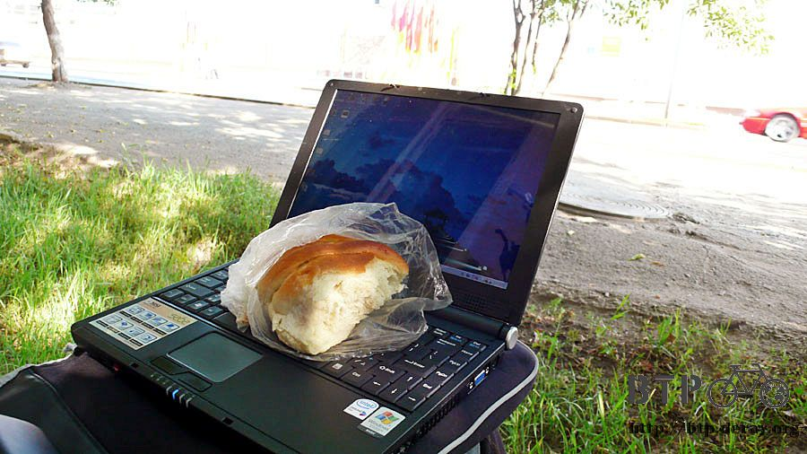
不過是閉上眼睛睡個覺，睜開眼睛打哈欠，這樣就要花去一個星期的生活費，實在慷慨不下去。
即使對自己說在哈薩克這半個月來，才住了四次旅館，將其他天的開銷挪到今天來花不就好了嗎？
但是這樣的話，露營了那麼多天就沒有意義啦，省吃儉用的旅行結果進入首都就破功，怎麼對得起過去餐風露宿的自己。
繼續往下騎也不知道哪裡有旅館，該不會等等又要露營了吧。
下一個決定好困難，我在樹下想了許久，整條麵包都快被吃光了。
最後我摸著自己的良心問自己，要做哪一個選擇，將來我回想樹下的這一刻時，我會不會後悔當時的決定？
收起電腦，吃掉最後一口的麵包，跨上小多，我決定離開首都，跟萬元旅館說掰掰。
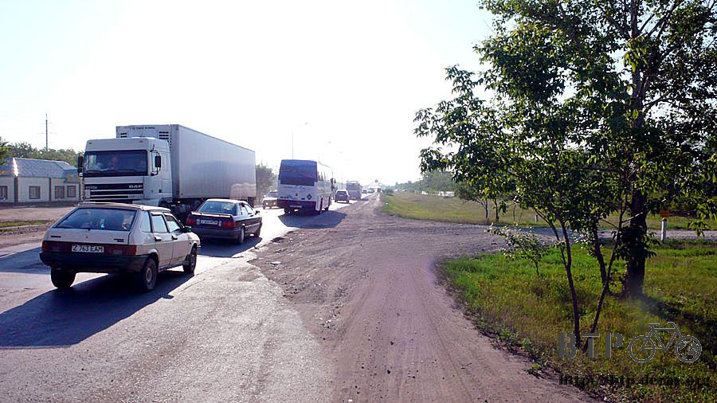
離開首都之後就要往邊界騎去了，距離還有一千多公里遠，但是時間還很充裕，至少還有十天以上，可以讓我慢慢的騎。
在市區中繞路，往西邊走再往北邊走，順著大馬路走就會離開市區，還不算太複雜。
離開市區之後馬路變得極差，哈薩克真是一個只靠幾個主要都市發達而已的國家，其它的部分說是落後一點也不為過。
這樣的城鄉差距令人搖頭嘆息，應該將資源分配給其它地方，讓所有人都有方便的電力和自來水可以使用。
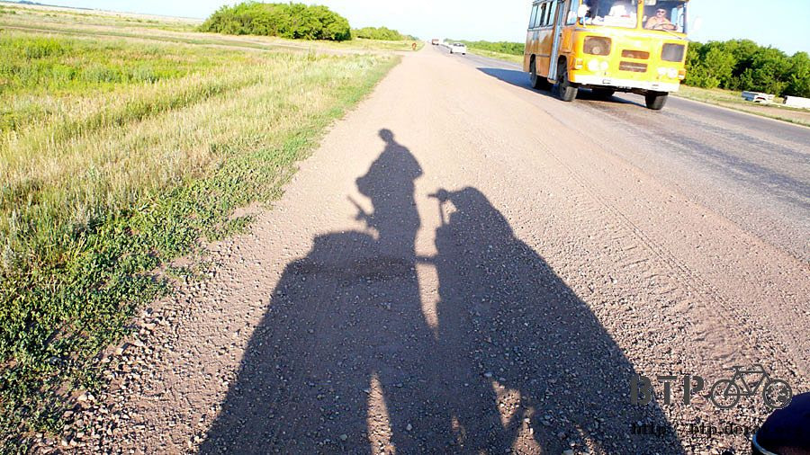
騎在爛爛的路上，每一次的坑洞都震的小多晃動，有點擔心輪胎的情況，但也沒什麼我能做的。
不指望能在郊區找到旅館，可是至少要有餐廳能讓我洗把臉、擦個澡，然後找一個地方露營。
停下一輛小轎車，車上的人好心的說可以帶著我去有旅館的地方，就在前面不遠而已。
一開始閃著雙黃燈開在我前面，我在後頭辛苦的跟著，沒兩下子就越開越快，然後不見蹤影，要哈薩克人開慢車想必很困難吧。
晚上九點多，太陽漸漸沒入地平線，此時我進入一個小城鎮，心裡想著就是這裡了，老天保佑這邊有餐廳。
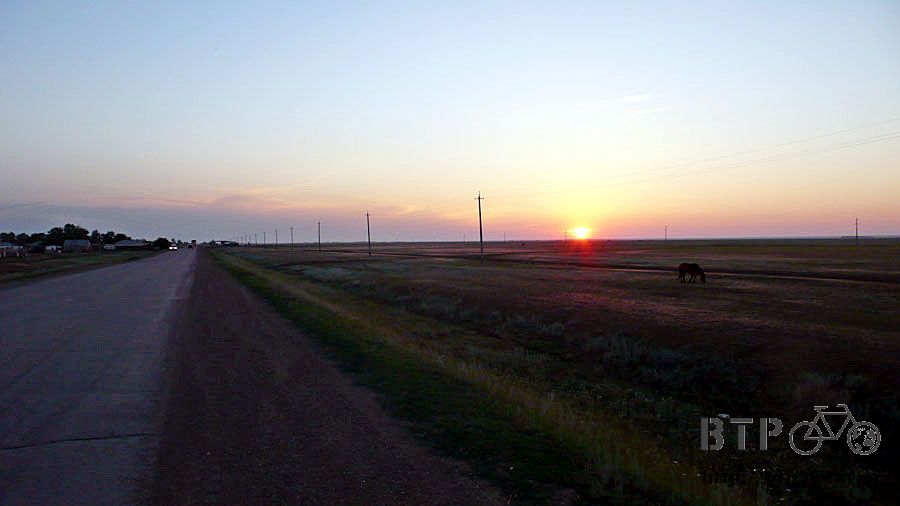
一間加油站旁搭了一個大帳篷，一間木屋，還有洗手檯，我尋找的棲身之處總算出現了。
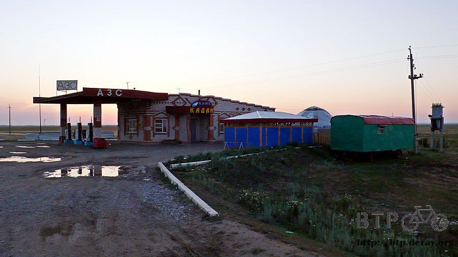
要做的事情很多，擦澡、洗衣服、寫遊記，為了可以在這邊待久一點，點個東西吃是必要的。
苦笑著跟店員說我的哈薩克語不是很好，之前其它人都會笑笑的，但是這個店員則是一臉『你哈薩克語不好甘我屁事』的表情。
遇到不太和善的人讓我有一點擔心，他會不會不讓我在這裡露營。
當我打赤膊在洗手檯洗頭巾的時候，他問我是不是要洗澡？
我指著洗手台說我可以在這邊擦一擦身體嗎？
他指著外面一棟小木屋，我以為那是廁所，結果是跟昨天看到那個藍色鐵桶一樣，是浴室。
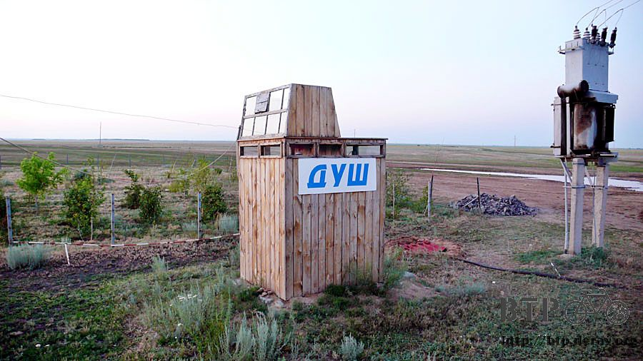
他帶著我過去，轉開蓮蓬頭，嘩啦啦的水就流下來，伸出手去觸碰，居然是熱水呢～
想不到可以在這邊洗熱水澡，實在太出乎意料之外了，淋浴費則是一百元，少喝半瓶可樂就能沖個舒服的澡，划算划算。
洗完澡之後，我趁店員在外面走動時，大膽的問他，我可不可以在外面的牆角搭帳篷過夜？
有那麼一瞬間我期待他會點頭答應，這樣今天就算有了著落，也劃下句點。
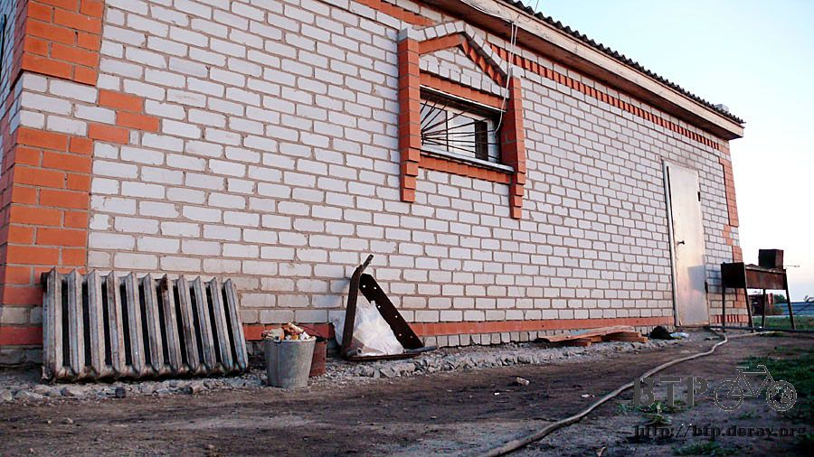
他看著我，然後看著牆邊，對著我搖搖手，說不行讓我睡在這邊。
我還沒來得及失望，他就帶我去巨無霸帳篷裡面，『睡外面不行，你睡這裡吧。』
原來他不是不友善的人，而是一個大好人，只是看到我這樣的旅行者，隻身在哈薩克旅行但是哈薩克話卻不會講，感到很頭痛而已。
多謝他的幫忙，今天可以睡在舒適的室內，決定離開首都所帶來的衝擊沒有太糟糕，我還是活得好好的。
不睡一萬元的房間死不了人，跟自己的想法背道而馳就算是認輸了。
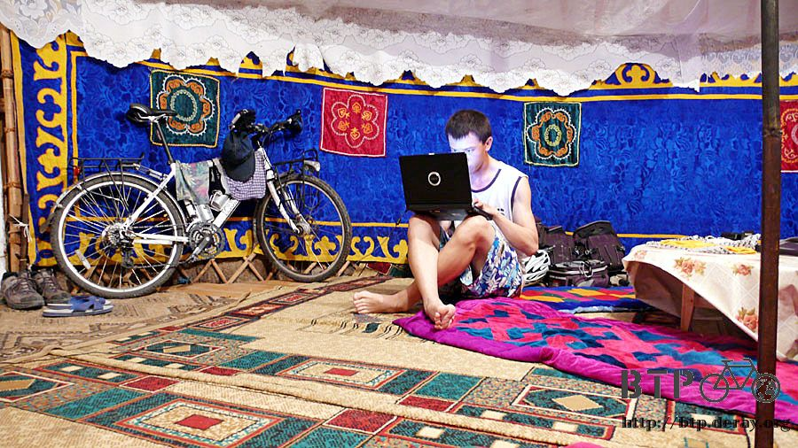
認為對的事情就要堅持下去，選擇困難的路走，即使崎嶇坎坷，但能欣賞別人看不到的風景。
繼續閱讀：7.11 善變的風
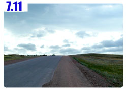
哈薩克-堅戈－ 1：0.26 台幣
7.10 |
總計：1690元 |
加油站可樂80元、四小時的網路時光1100元、午餐加晚餐麵包、可樂、冰淇淋190元、一大壺熱奶茶220元、沖澡100元 |
|